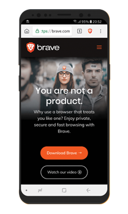

Home
Charts
Learn
Blog
Today we begin with Brave, one of the newest browsers on the market!! With a team of around 75 All-Star players and a growing lineup with time. A force to be reckoned with that's for sure. They come out swinging with Brendan Eich as the Founder and CEO, also as the inventor of JavaScript as well. Seems like they really knew what they were aiming for with this project and nailed it.
What they're offering is a Free service which is the browser, that has outstanding functions
blocking ads, trackers, device recognition and a few other useful features that we will
get into as writing this.
You ask but do the ad blockers really work for sites like Youtube, even that
have pop-ups every 2 seconds, and also play them during the video? Yes the ad blockers work
for even the tuffest sites.
But the thing is when
you see how many ads it blocked as well as trackers, you'll be shocked. It has an actual counter
that shows you real time how many ads you've blocked. This will sound way far out there but I have blocked
139,647 ads since I've downloaded Brave, Right!! That is Wild!! Also 2,315 Trackers Blocked it says. This
is all with in a few months. So that was a major eye opener when I realized some sites have 60 ads
and trackers you'll block per visit. It's nice that we have the option to now not have that stuff stick with
us each visit to a site. Freedom of surfing the web is kinda back in our hands.
In my opinion the ads were getting out of control online, everywhere
you browse they're shoving some ad in your face and taking away from your internet experience..
Almost losing focus sometimes while trying to work and find info because a pop-up would appear, then
another, then another. I tend to just close that site down and ignore the information
that they might be offering because the ads were to much..
Which then totally defeats the purpose of that person having
a website even, if customers or viewers are just going to close the page right away
because of annoying ads all the time..

But I get it, people need to make money, and are trying to think of different ways they can earn off their site. Which is totally understandable, I dig it. But how are they to make money off what they are selling if people just leave, or don't even click on the ads to even get paid by because people leave so quick. Also with all the pop-up ads and such, it slows down the persons page, for the loading times are ridiculous.
The Brave Team really thought of a solution for all the questions or concerns that were addressed above. They themselves I'm sure could see the situation that was building up on the internet and focused on a solution. Ok so lets get this straight, Brave offers a free Ad blocking service which is the Brave browser, but also offers a way for you to make money off of ads.. Huh, how does that work??
Well they probably seen that people were just closing the pages, ignoring the ads, bots were probably taking some of the clicks on get paid by click advertisement anyways.. So they made a more focused way of advertisers to target there direct potential customers, that are real and actually interested in that product. Well that sounds pretty cool and useful, because I've also been on the end where I pay for advertising and thinking were those just bots that clicked on my ads, or real people? Now if people are using the Brave browser and a ad pops up while a user chooses to see it, you can guarantee it was a real person who clicked the pop-up.
Wait, so some of you are probably saying, I thought you said there are no pop-ups dude.. Well, there are options for advertising.. If, you choose to opt in, you can view ads and get paid for it, just go to rewards settings and check the settings that fit your needs the best. Yeah you totally can earn crypto for viewing an ad. It basically shows up as an alert box at the bottom right of your screen, you either click it to view the ad, or ignore if your not feeling it at the moment and the box will disappear within a few seconds.
Lately I been clicking the ads to see how much you really can earn doing this. At the moment I have 5 ads per hour set, which is the maximum amount of ads that will show up per hour, of you being online. It seems to be averaging .2 of a BAT token per ad, so viewing five ads will add up to one token. At the time of writing this that seems to be the average pay, also the price as of today per Basic Attention Token is .17713 cents, so rounding up a bit it is about .18 cents per token.
They also have another way you can earn is through tips, when you become a Content Creator and monetize your sites, or content, your favorite viewers can tip you!! Either automatically each month, or when ever they feel as they're viewing your content. Cool that sounds pretty darn sweet if ya ask me. Youtubers, Social Media Influencers, Content Creators, Bloggers, everyone in the digital world now has a way of earning with their content. A lot of Content Creators were offering free content in a way, as is here, blogs dont really make ya much money for offering free info:) So the option of possibly earning a tip is very encouraging.. Well I also noticed that Brave gives you a little bit extra here and there by putting some Free BAT tokens in the pulldown menu that says Grants. I've checked that a few times and there was a grant you could claim, which I did..
Side note I thought was kinda funny, this could just be me.. but the thought I had was, as a content creator this shows the littlest bit of encouragement or acknowledgment goes a long way. So sometimes when you get a small tip or earn a bit of crypto, we get SUPER excited and energized to produce some more content. What's funny is a lot of people are like I'm not going to work for under blah blah blah per hr. But then when we look at it, we are willing to work for incredibly under that amount for possibly a tip, or earning one or a few tokens, which are only worth about 18 cents ha. Not sure where I'm going with that, was just an observation maybe. It just kinda shows you we want to just to be rewarded in some way I guess, or feel there is a potential to make something. I dunno know, was a brief thought but we are willing to work for cheap it seems if we like what we're doing ha.
Lets get back to the conversation about earning. Even tho it's earning 4 cents per ad you view, or a few tokens here and there from tips, if you have a big following or a lucky day even, there is some major potential in some of these things if you work it correctly. Because I see a lot of Youtubers with 250K plus subscribers, if even only a small percentage of those viewers have Brave setup and a automatic tips come in from them, also as the price increases on BAT, your holdings will have gained more value as well, anything is possible you could do real well off this. Obviously I'm trying it:)
Another point I like to talk about is, as a developer, how do I feel about the ad blocking services or browser. Because while I'm making a site I noticed it blocks other features not just advertising. Example, on the this site the charts sections on the pages are cut off some what because the browser prevents it from fully appearing.. It's funny cause as I build something I think Yayyy figured out a cool design, then, you say oh wait, half the people probably aren't able to view it.. So that is just another side of the coin that I want to show you. To be able to form your own opinion it's good to hear all the points of view..
Now that we're talking about developers and developing for a second, the developer tools (haha a little tongue twister for ya), for the Brave Browser is most similar to Chrome, has all the same features if not more. So you should find your way around there nice and easy. A simple right click on your mouse pad, and you shall see the inspect function. The other point that almost slipped my mind, and this I could be off on some of the info is (I would double check this), but I'm thinking it messes with the google analytics sometimes, if someones viewing the site but has the all cookies blocked option, because you can adjust the settings to have all cookies blocked or 3rd party cookies blocked, they possibly might block the analytics, something to research a bit if you're a developer.
We really should talk a little about the privacy factor, they hooked it up big time for us and having Tor Browser included so you can browse totally anonymously was an excellent feature.. On certain sites it will tell you take the Tor browser off, it works so well some websites dislike it ha, so if you see that, you know what it means now. The Tor Browsing experience makes it so the websites you visit aren't able to save your browsing history, it basically makes it tuffer for them to create an AI of you and your info, kinda a small joke but also somewhat serious. A lot of times thats how I like to browse is with Tor. A downside of browsing with Tor enabled is that the browser and functions load a lot slower, you will notice the difference it's that much more sluggish.
Thought I mentioned this, but came back to the blog and noticed it slipped my mind.. I also wrote another article that talks about Brave, called Web Monetizing. You can grab other tidbits of knowledge in that as well.
Also people were curious, what about how do you get your money off the browser or out of your account, to actually get paid?? Well that's another great question, at the moment they have a deal worked out with Uphold Exchange (which I also have a earlier blog writtten about them, click here to view) But you can sign up for an account and have your crypto right there ready to trade for a variety of coins or tokens, or swap out for which ever currency you use that is available, USD is for sure I can guarantee that. Then if you swapped it for usd you can transfer it to your Bank account if you'd like. They're also setting up options for you to use Trezor or Ledger Nano. Which I'm stoked about that, because I'm trying to get out of the habbit of having so many accounts made with my personal information attached to a bank account.. That is kinda one thing we are all trying to get away from first of all with this crypto movement, or at least some of us are trying not to have our personal info so accesable to everyone.
About the hardware wallets, I just checked their site and didn't see the info about that coming into play yet, but I read it a few places very recently, also about them adding other coins and tokens as options for tips and such not just BAT. So keep that thought on the back burner. See this is kinda fun, we are in the party as early adopters seeing cool changes happen in big companies.. I think Brave will be one of the biggest browsers in the future.
Author: GreenHornSep 3, 2019